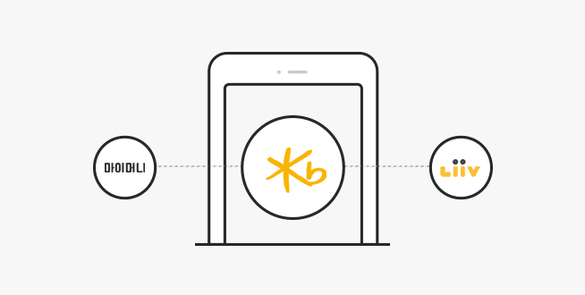
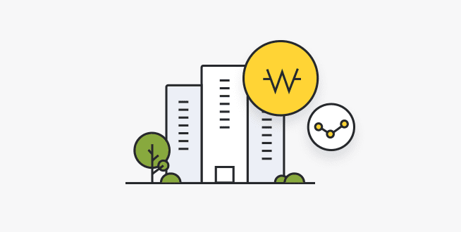

마이데이터 서비스란?

- 내 데이터의 주인은 나
- 개인신용정보 전송요구를 통해 직접 금융 및 신용정보를 관리하는 서비스
-
모든 금융정보를 한 곳에 쉽게 확인
은행, 카드, 보험, 증권, 통신 등에 흩어져 있는 개인의 금융정보를 수집하여 한 곳에 모아 쉽게 확인할 수 있습니다.
-
맞춤형 자산관리등 개인화 서비스 이용
개인의 현재 신용 및 재무현황을 파악하여 최적화된 금융상품 추천 및 재무 컨설팅 등 개인화된 맞춤형 자산관리 서비스를 받을 수 있습니다.
KB마이데이터 서비스의 특별함
새로운 가치를 제공하는 생활밀착형 서비스 자산 및 지출 관리, 목표 설정 등 고객의 미래 설계에 보탬이 되는 다양한 콘텐츠를 통해 새로운 금융 경험 제공

- 자산 관리부터 신용관리, 자동차 관리까지!
- 금융 자산뿐 아니라 부동산, 신용, 자동차 등 비금융 자산도 KB국민은행만의 인사이트로 세심하고 다양한 서비스를 제공합니다.
- KB국민은행의 다양한 채널에서 쉽고 빠르게!
- KB마이데이터 서비스는 마이머니 외에 KB스타뱅킹, 리브 등 KB국민은행 여러 플랫폼에서 편리하게 이용하실 수 있습니다.